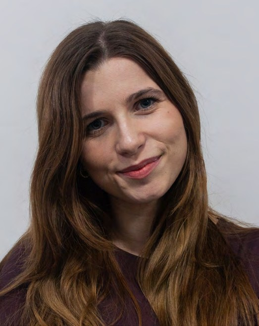

SHAPELESAI
od 2025Social media manager
- Tvorba obsahu a vizuálov pre sociálne siete
- Plánovanie komunikácie a obsahového kalendára
- Prepojenie grafiky, kreativity a marketingu
Grafická dizajnérka a ilustrátorka
Grafická dizajnérka s polygrafickým vzdelaním a praxou v tvorbe vizuálnych identít, obalov, tlačovín a obsahu pre značky. Remeselný základ z polygrafie a z prípravy podkladov do tlače spájam s marketingovým myslením zo štúdia mediálnej komunikácie a s typografiou, ktorá text nesie a neprekrýva.

Social media manager
Grafický dizajn a marketing
Grafický dizajn a vizuálna komunikácia
Masmediálna a marketingová komunikácia — Mgr.
Dizajn médií — Bc.
Faculty of Communication — Visual Communication Design
Grafik digitálnych médií